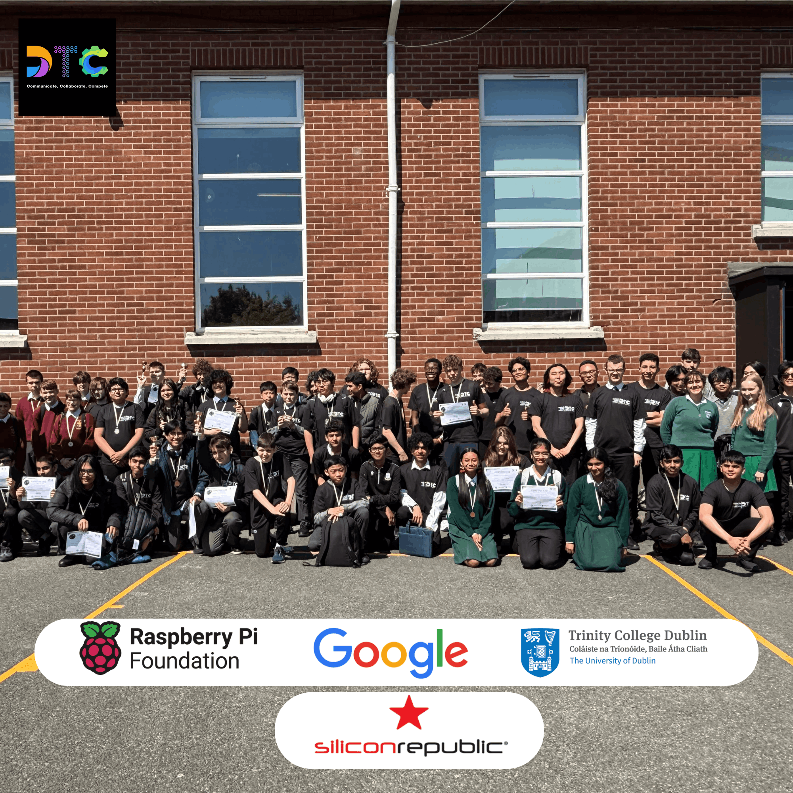
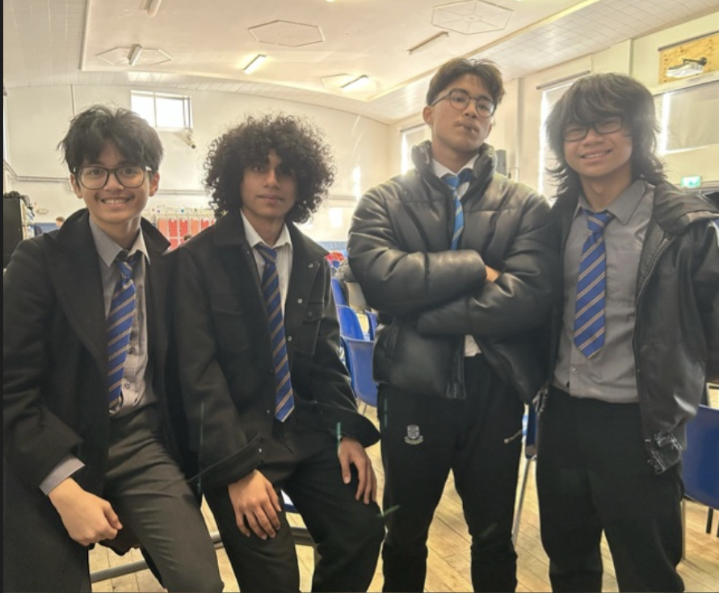

Dublin Tech Circuit
About
Dublin Tech Circuit is a student-led community building project for young people interested in technology, creativity, and collaboration. It brings students from different schools into one shared circuit of workshops, challenges, and showcase moments.

The goal is simple: make building feel less isolated. Students get to meet other young builders, test ideas, learn from each other, and see that technical work can also be social, expressive, and community-led.

Impact Report
Coming next
Space reserved for the Dublin Tech Circuit impact report once it is ready to attach.